III Ecoferia: una mirada al cuidado del mar
RUA participó en la III Ecoferia de Radio Yaraví y Amakella con una actividad de sensibilización sobre el Tratado de Alta Mar y la protección de los ecosistemas marinos.
Ver másConectamos la formación universitaria con el compromiso ambiental. Estas son las líneas que orientan nuestro trabajo en Arequipa.
Jornadas, talleres y encuentros que forman parte del camino de RUA. Explora sus historias y fotografías.
24 historias
RUA participó en la III Ecoferia de Radio Yaraví y Amakella con una actividad de sensibilización sobre el Tratado de Alta Mar y la protección de los ecosistemas marinos.
Ver más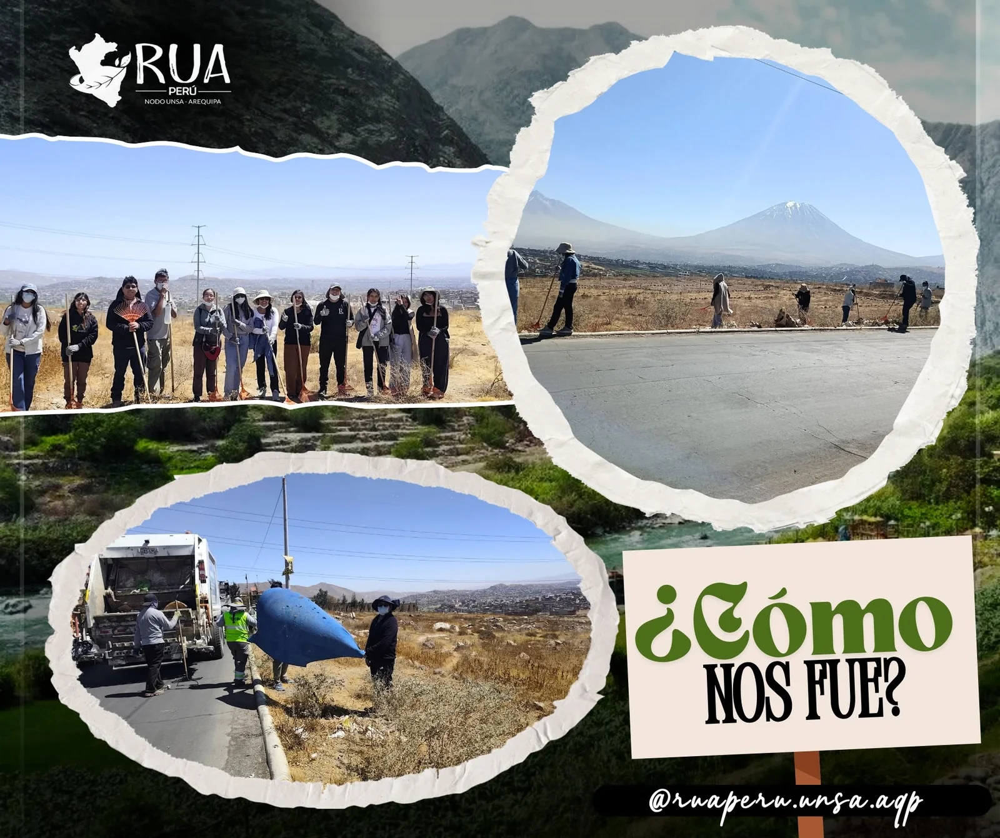
Voluntarios de RUA se reunieron en Sabandía para retirar residuos y cuidar los espacios naturales.
Ver más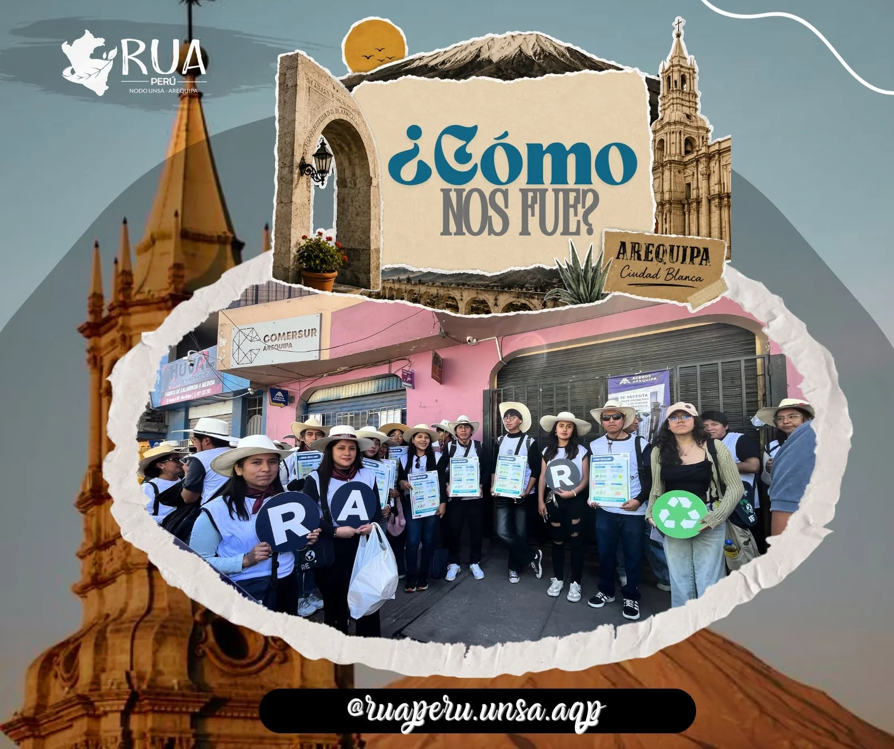
El voluntariado participó en el Corso de Arequipa por los 486 años de fundación de la ciudad, representando al Consejo Provincial de la Juventud y a la Municipalidad de Yura.
Ver más
La primera edición de CineRUA de 2026 reunió al voluntariado para ver Princesa Mononoke y conversar sobre la relación entre las personas y la naturaleza.
Ver más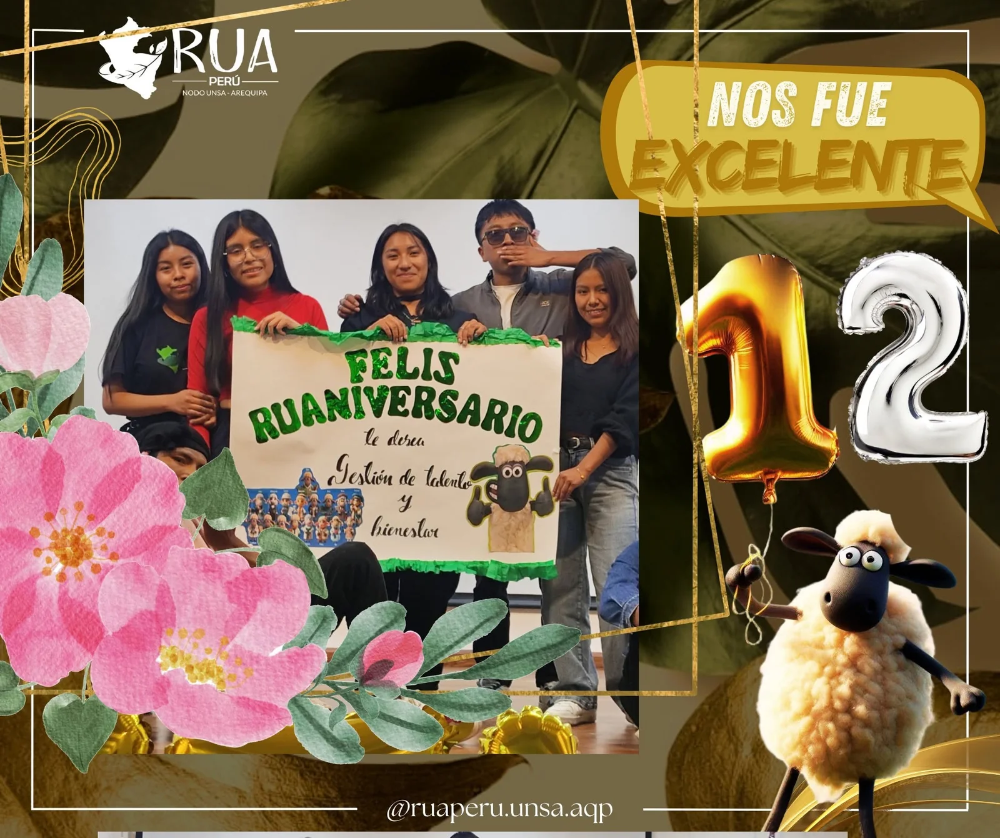
El nodo celebró su aniversario en el Auditorio de Ingeniería Industrial con un encuentro de integración, dinámicas y aprendizaje.
Ver más
El nodo recibió a sus nuevos integrantes con dinámicas, aprendizaje y actividades de integración en el parque Juan Pablo Vizcardo y Guzmán.
Ver más
RUA participó en una jornada de Hilando Verde en Cerro Colorado, junto a Michell, instituciones públicas y otras organizaciones.
Ver más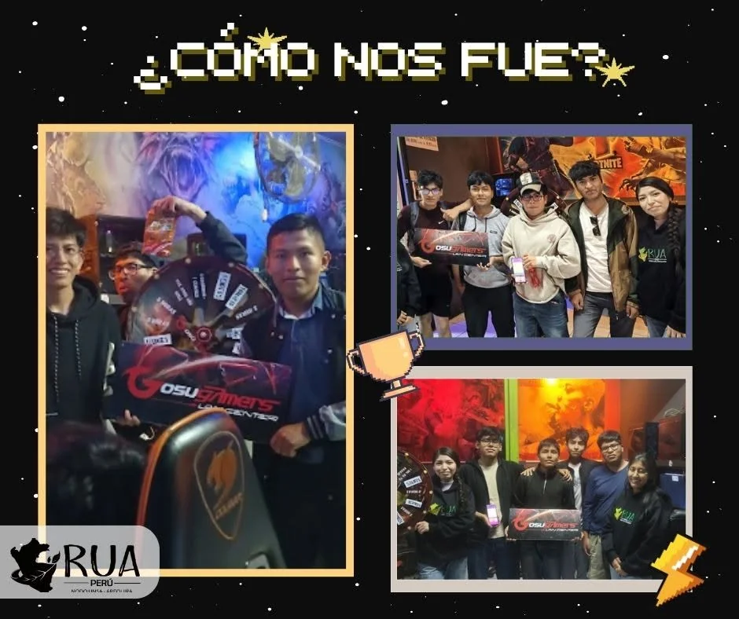
RUA Major reunió a jugadores, equipos y voluntarios en una jornada de videojuegos y convivencia.
Ver más
RUA UNSA apoyó una jornada de recuperación de áreas verdes organizada por AREISA, junto a otros colectivos universitarios y la municipalidad provincial.
Ver más
Los nodos UNSA y UCSM de RUA Perú organizaron un encuentro sobre biodiversidad, gestión ambiental, cambio climático y educación ambiental.
Ver más
RUA Perú Nodo UNSA participó en la feria por la Hora del Planeta con mensajes y dinámicas para promover hábitos de cuidado ambiental junto a organizaciones y vecinos de Miraflores.
Ver más
La feria Eco Innova reunió iniciativas de sostenibilidad en el marco del XXII ENUMA, organizado con RUA Perú Nodo UNSA y la Universidad Católica de Santa María.
Ver más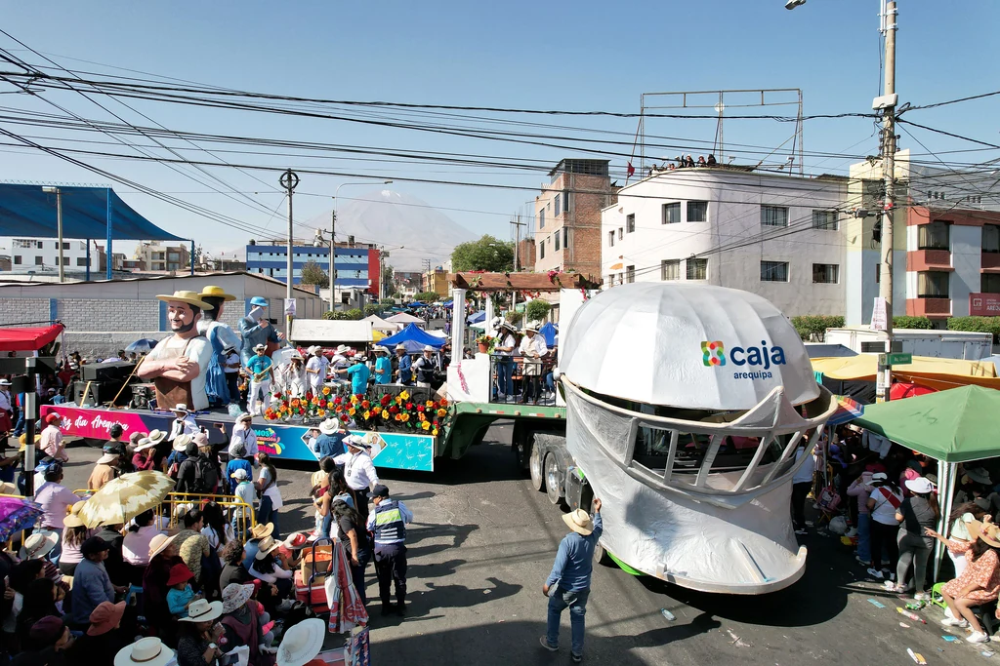
Voluntarios de RUA colaboraron con Caja Arequipa en una iniciativa de recuperación de residuos durante el Corso de la Amistad 2024, como parte de las celebraciones por el aniversario de la ciudad.
Ver más
RUA compartió tres entregas de RUA Noticias durante agosto de 2024.
Ver más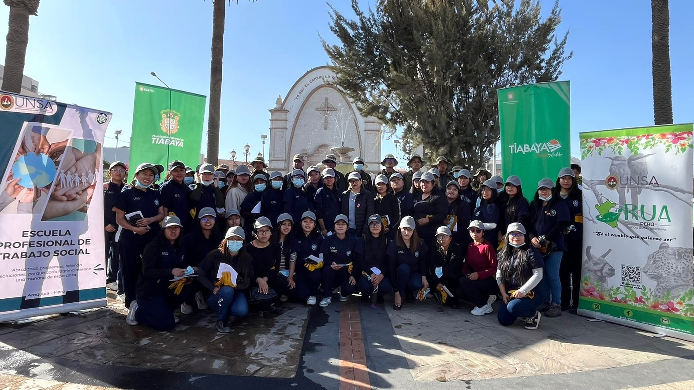
RUA se sumó a estudiantes de Trabajo Social de la UNSA, voluntarios y entidades locales para retirar residuos de las riberas del río Chili en Tiabaya.
Ver más
Voluntarios de RUA UNSA participaron en talleres del programa EDUCCA de Cerro Colorado sobre manejo de residuos y reciclaje, junto a personal municipal, MINAM y Ccaytos AQP.
Ver más
Los nodos UNSA y UCSM de RUA participaron en la campaña Hunter Sostenible durante el Corso de la Amistad, junto a organizaciones y programas ambientales.
Ver más
Voluntarios de RUA participaron en una jornada de plantación en La Pascana, dentro del proyecto de reforestación impulsado por SERFOR y Rotary Club Internacional en Yura.
Ver más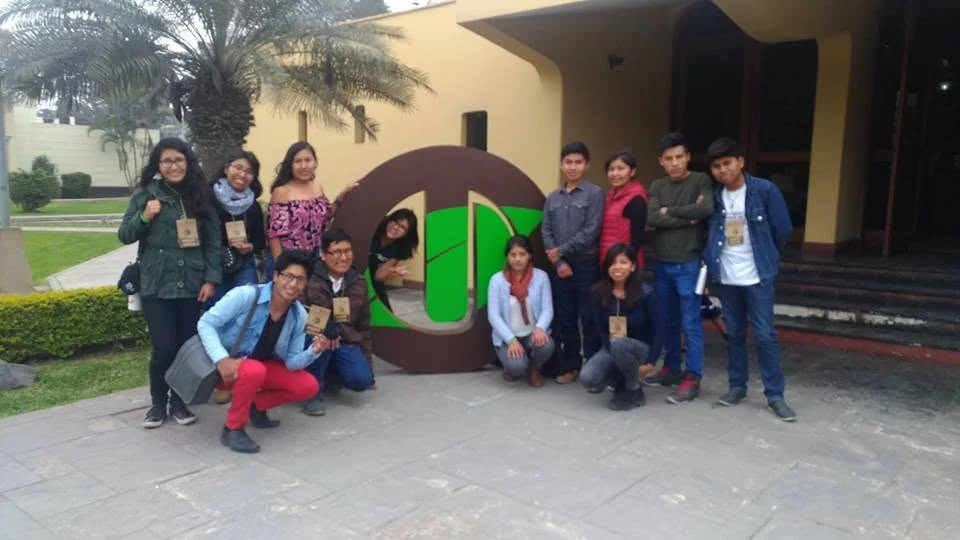
La delegación de RUA UNSA compartió espacios de encuentro y trabajo en equipo durante el ENUMA de Lima.
Ver más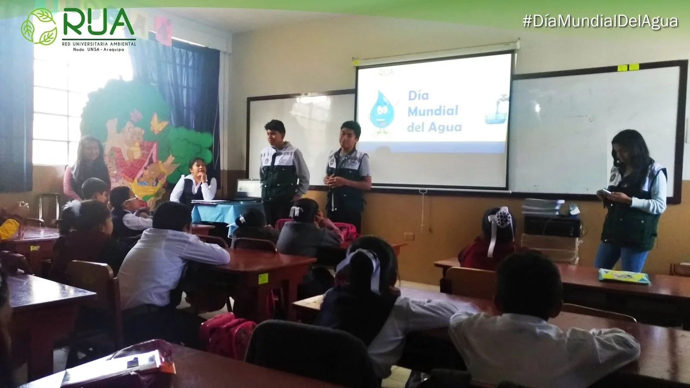
RUA llevó charlas sobre el uso responsable del agua a los pequeños Guardianes de la Tierra del colegio 7 de Agosto, en el marco del Día Mundial del Agua.
Ver más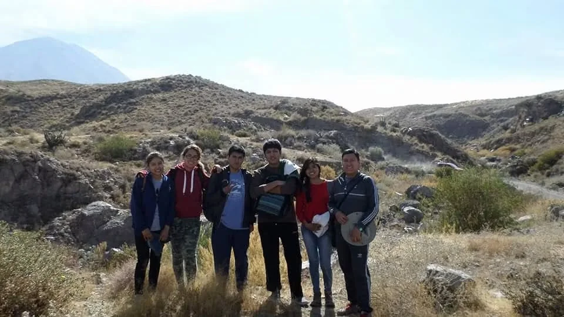
RUA documentó su participación en una jornada de limpieza en Calambucos.
Ver más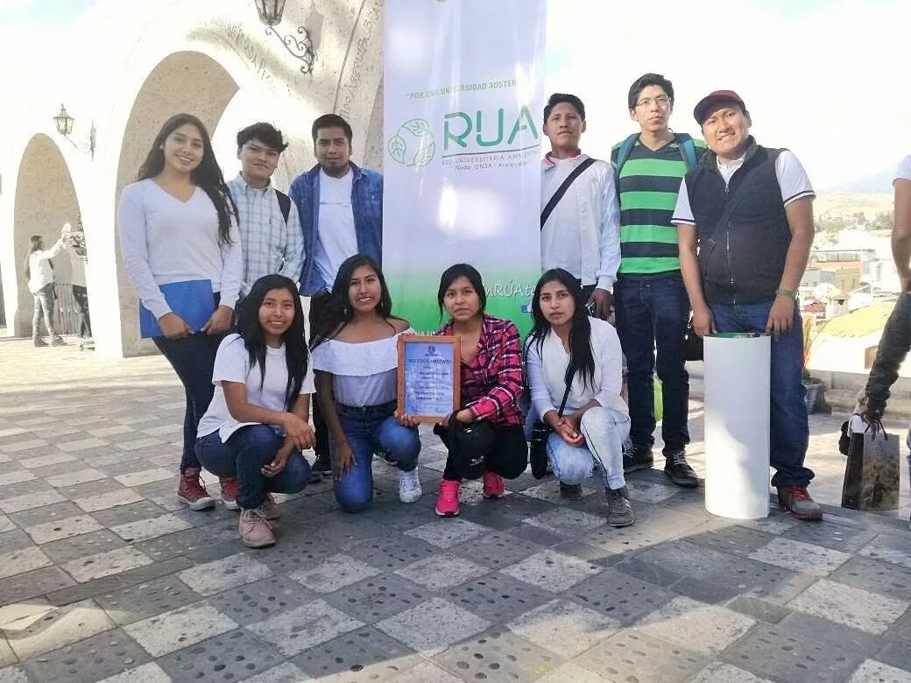
RUA participó en la organización de la III Feria Temática Ambiental, realizada en la plaza de Yanahuara.
Ver más
RUA UNSA participó en la campaña HAZla con una jornada de limpieza del río Chili.
Ver más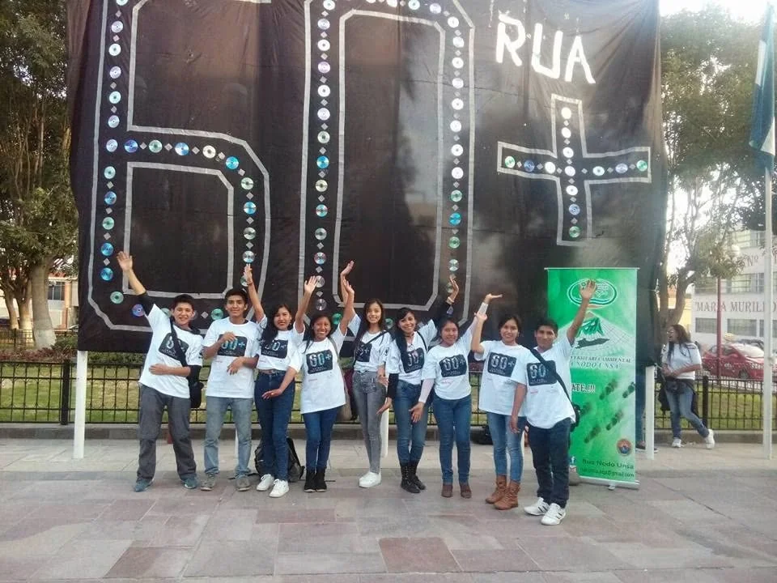
RUA se sumó a la Hora del Planeta en la Plaza Las Américas con un encuentro que reunió al voluntariado y a la comunidad.
Ver más¿Buscas una próxima actividad? Las convocatorias y fechas se comunican en nuestros canales oficiales. Consultar los canales de RUA (abre en otra pestaña)
Promovemos la reflexión sobre nuestro entorno y el fortalecimiento de una ciudadanía informada. La educación y la cultura ambiental son el punto de partida para tomar decisiones conscientes y participar en el cuidado de lo que compartimos.
Impulsamos la participación de estudiantes que quieren contribuir a la sostenibilidad. Buscamos que distintas disciplinas se encuentren, que las ideas se compartan y que el compromiso universitario llegue a la comunidad.
Promovemos el desarrollo de propuestas que conecten el conocimiento universitario con las necesidades de nuestro entorno. La colaboración y el trabajo multidisciplinario orientan la búsqueda de soluciones para Arequipa.
Tiempo, ideas, conocimientos. Cada forma de involucrarse puede abrir nuevas posibilidades.
Conecta con personas que comparten tu compromiso y consulta cómo ser parte del nodo.
Quiero participar¿Representas a una organización o tienes una idea? Exploremos cómo trabajar juntos.
Proponer una colaboraciónConversa con el equipo sobre las necesidades y los canales de apoyo disponibles.
Ver más